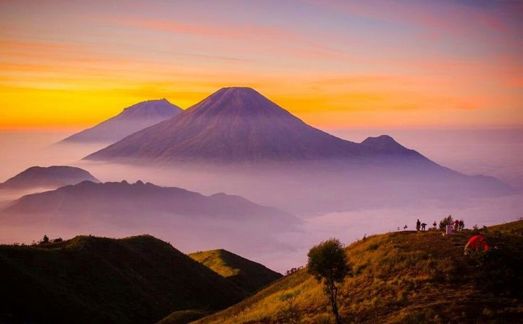
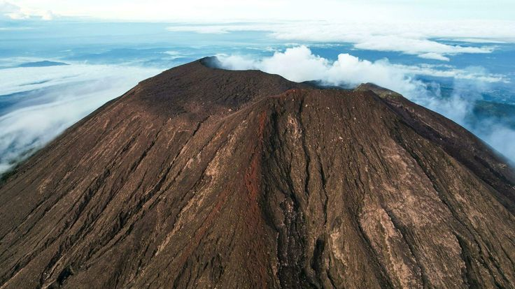
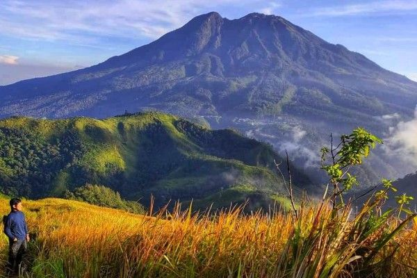

Informasi Cuaca Terkini
Memuat informasi cuaca...
Gunung Dengan Jalur Pendakian Resmi

Gunung Merbabu
Kesulitan: Sedang

Gunung Sumbing
Kesulitan: Sulit
Gunung Sindoro
Kesulitan: Sedang

Gunung Prau
Kesulitan: Mudah

Gunung Slamet
Kesulitan: Sulit
Gunung kembang
Kesulitan: Mudah

Gunung Lawu
Kesulitan: Sedang
Tips & Tricks Pendakian
Persiapkan Fisik
Latihan fisik sebelum pendakian sangat penting. Fokus pada:
- Latihan kardio
- Penguatan otot
- Meningkatkan stamina
Pilih Waktu yang Tepat
Pertimbangkan cuaca dan musim:
- Hindari musim hujan
- Pilih April-Oktober
- Periksa ramalan cuaca
Jangan Sendirian
Keselamatan dalam kelompok:
- Minimal 3-4 orang
- Berbagi beban dan tanggung jawab
- Saling mendukung
Perlengkapan yang Tepat
Persiapan barang yang wajib:
- Sepatu hiking berkualitas
- Jaket anti air
- Tas dengan kapasitas cukup
- Peralatan P3K
Komunikasi Darurat
Persiapan komunikasi:
- Ponsel dengan baterai cadangan
- Power bank
- Nomor darurat
- Radio komunikasi
Jaga Kebersihan Alam
Prinsip pendakian ramah lingkungan:
- Bawa pulang sampah
- Tidak merusak vegetasi
- Hindari membakar api sembarangan
- Hormati habitat satwa
Hidrasi yang Cukup
Pentingnya menjaga hidrasi selama pendakian:
- Minum air secara teratur
- Bawa cukup air atau alat penyaring air
- Hindari dehidrasi dengan memantau warna urine
Gunakan Peta dan Kompas
Pentingnya navigasi selama pendakian:
- Pelajari cara menggunakan peta dan kompas
- Selalu bawa peta jalur pendakian
- Ketahui titik-titik penting di rute